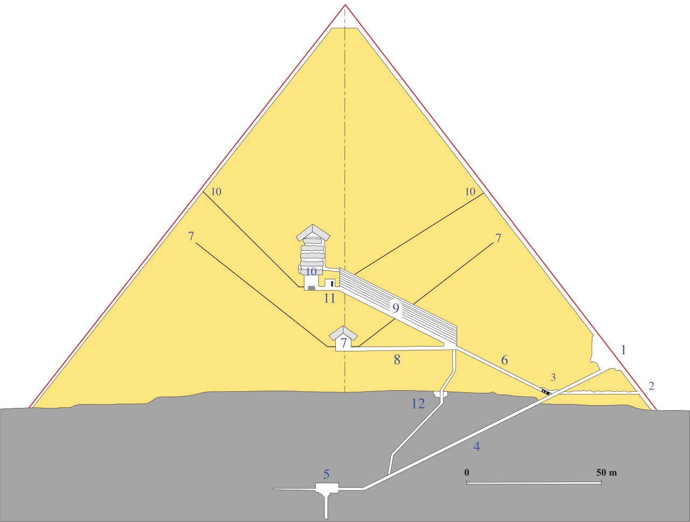

| 55.0 | RA:
I am Ra. I greet you in the love and in the light of the One Infinite
Creator. I communicate now.
|
| Ра: Я есмь Ра. Приветствую вас в любви и свете Единого Бесконечного Создателя.
Теперь я общаюсь.
|
| 55.1 | QUESTIONER:
I would first like to ask as to the condition of the instrument, please?
|
| Собеседник: Сначала расскажите пожалуйста о состоянии инструмента?
|
|
| RA:
I am Ra. This instrument is experiencing physical distortions toward
weakness of the bodily complex occurring due to psychic attack. This
instrument’s vital energies have not been affected, however, due to the aid
of those present in healing work. This instrument will apparently be
subject to such weakness distortions due to incarnative processes which
predispose the body complex towards weakness distortions.
|
|
| Ра: Я есмь Ра. Этот инструмент переживает психические искривления в сторону
слабости телесного комплекса происходящие из-за психической атаки.
(Напоминание что в данной книге психическая атака это процесс
передачи отрицательной энергии/информации от отрицательного существа из 4-6
плотности что может вызывать в существе,
которому это передаётся, большое разнообразие физических и психических побочных
эффектов. Земные существа чтобы такое делать как правило нуждаются в ритуалах,
а существа высших плотностей больше пользуются своими естественными более продвинутыми
способностями и возможностями. Для атаки используются сознательные и подсознательные
недостатки/склонности жертвы (коих у каждого существа предостаточно), физические
но в основном психические, для того чтобы атака была эффективна и чтобы на
это было потрачено поменьше энергии. примеч.пер.)
Однако жизненные энергии этого инструмента небыли затронуты вследствие помощи в исцелении
от тех кто здесь присутствуюет. Судя по всему этот инструмент продолжит подвергаться
этим искривлениям слабости из-за процессов воплощения которые предрасполагают
телесный комплекс в сторону искривлений слабости.
|
| 55.2 | QUESTIONER:
Is there any specific thing that we can do that you have
already told us? Or otherwise to alleviate this psychic attack or to help the
instrument the most?
|
| Собеседник: Мы можем что либо сделать из того что вы нам уже сказали? Или помочь другим
способом справиться с этой психической атакой или более эффективно помочь инструменту?
|
|
| RA:
I am Ra. We scan this instrument and find its distortion towards
appreciation of each entity and each entity’s caring, as you may call it.
This atmosphere, shall we say, offers the greatest contrast to the
discomfort of such psychic attacks, being the reciprocal, that is, the
atmosphere of psychic support.
This each of you do as a subconscious function of true attitudinal, mental, emotional, and spiritual distortions towards this instrument. There is no magic greater than honest distortion toward love.
|
|
| Ра: Я есмь Ра. Мы сканируем этот инструмент и находим её искривление в сторону
благодарности каждому существу и за заботу каждого существа, как вы бы это назвали.
Эта атмосфера, скажем так, предлагает наибольший контраст для дискомфорта таких
психических атак, будучи обоюдным, то есть, атмосферой психической поддержки.
Это делает каждый из вас вследствие подсознательных эффектов поведенческих, ментальных, эмоциональных, и духовных искривлений в сторону этого инструмента. Нет больше магии чем искреннее искривление в сторону любви.
|
| 55.3 | QUESTIONER:
Thank you. I want to ask a couple questions about previous
material that I didn’t understand. I’m hoping that this will clear up my
understanding, somewhat, with respect to the mental configurations with
which we have been dealing.
In the session before last you stated, “However, this is a risk for the Orion entities due to the frequency with which the harvestable negative planetary entities then attempt to bid, or order, the Orion contact, just as these entities bid planetary negative contacts.” Can you explain the mechanisms that affect polarization in consciousness with respect to this statement?
|
| Собеседник: Спасибо. Я хотел бы задать несколько вопросов по поводу прошлого материала
который я не понял. Я надеюсь что это прояснит моё понимание, хоть немного, в отношении
ментальных конфигураций с которыми мы имели дело.
На позапрошлом сеансе вы заявили, "Однако, это представляет риск для существ Ориона из-за частоты с которой пригодные для отрицательного урожая планетарные существа потом пытаются предложить цену и заказать контакт Ориона, также как эти существа предлагают цену за отрицательные планетарные контакты." Можете объяснить механизмы которые влияют на поляризацию в сознании в контексте этого утверждения?
|
|
| RA:
I am Ra. The negative polarization is greatly aided by the subjugation
or enslavement of other-selves. The potential between two negatively
polarized entities is such that the entity which enslaves the other or bids
the other gains in negative polarity.
The entity so bidden or enslaved, in serving an other-self, will necessarily lose negative polarity, although it will gain in desire for further negative polarization. This desire will then tend to create opportunities to regain negative polarity.
|
|
| Ра: Я есмь Ра. Отрицательной поляризации сильно помогает покорение или порабощение
других я. Потенциал между двумя отрицательно поляризованными существами таков что
существо которое порабощает или покупает другое существо приобретает отрицательную
полярность.
Существо которое купили или поработили, служа другому-я, естественным образом теряет отрицательную полярность, хотя оно приобретёт желание для дальнейшей отрицательной поляризации. Это желание потом будет порождать возможности для восстановления отрицательной полярности.
|
| 55.4 | QUESTIONER:
Am I to understand then - just the fact that the third-density
entity on this planet . . . just the fact that he calls or bids an Orion
Crusader is a polarizing type of action that affects both entities?
|
| Собеседник: Должен ли я тогда понимать - сам факт что существо третьей плотности с этой
планеты... сам факт что оно пытается объявить ставку или заплатить Крестоносцу
Ориона является поляризующим типом поведения которое влияет на оба существа?
|
|
| RA: I am Ra. This is incorrect. The calling mechanism is not congruent in
the slightest degree with the bidding mechanism. In the calling, the entity
which calls is a suppliant neophyte asking for aid in negative
understanding, if you may excuse this misnomer. The Orion response
increases its negative polarity as it is disseminating the negative
philosophy, thereby enslaving, or bidding, the entity calling.
There are instances, however, when the contact becomes a contest which is prototypical of negativity. In this contest, the caller will attempt not to ask for aid but to demand results. Since the third-density, negatively oriented, harvestable entity has at its disposal an incarnative experiential nexus, and since Orion Crusaders are, in a great extent, bound by the First Distortion in order to progress, the Orion entity is vulnerable to such bidding, if properly done. In this case, the third-density entity becomes master, and the Orion Crusader becomes entrapped and can be bid. This is rare. However, when it has occurred the Orion entity or social memory complex involved has experienced loss of negative polarity in proportion to the strength of the bidding third-density entity.
|
|
| Ра: Я есмь Ра. Это неверно. Механизм объявления ставки даже близко не равен
с механизмом проведения торгов. При объявлении, существо которое предлагает
является просящим неофитом просящим помощи в получении отрицательного понимания,
если простите этот неправильный термин. Ответ Ориона повышает отрицательную полярность
поскольку он распространяет отрицательную философию, таким образом порабощая,
или предлагая цену, существу которое предлагает ставку. (этот
механизм, как ранее так и позже, может быть не совсем верно переведён поскольку
я не особо разбираюсь в финансовых и азартных терминах и философиях особенно
в контексте садистов и их "ценностей". примеч.пер.)
Однако бывают случаи когда контакт становится состязанием которое типично для отрицательных существ. В этом соревновании, объявляющий ставку/цену постарается не просить помощи а потребовать результатов. Поскольку отрицательно ориентированное существо третьей плотности имеет в своём распоряжении аспекты этой плотности, и поскольку Крестоносцы Ориона в большой степени связанны Первым Искривлением для того чтобы прогрессировать, существо Ориона уязвима в таких ситуациях, если всё делается правильно. (Если перевести это на человеческий язык, то Ра хочет сказать что хоть существо Ориона более могущественное но тем не менее оно не может (не имеет право) "спуститься на Землю и дать люлей" хитрому/обнаглевшему отрицательному существу с Земли, поскольку Свобода Воли существ в третьей плотности защищена, поэтому существо с Ориона может остаться с носом если существо с Земли сделает всё правильно. Эдакий жабогадюкинг. примеч.пер.) В этом случае, существо третьей плотности становится хозяином, а Крестоносец Ориона становится заложником и может делать ставку. Это редко. Однако, когда это случалось то существо Ориона или вовлеченный комплекс общественной памяти переживали потерю отрицательной полярности прямо пропорционально силе ставки существа третьей плотности. (Происходит редко потому что существо Ориона тоже не лыком шито, у него могут быть свои прислужники на Земле, плюс он может читать мысли. примеч.пер.)
|
| 55.5 | QUESTIONER:
You mentioned that this will work when the bidding is
properly done. What did you mean by “when the bidding is properly done?”
|
| Собеседник: Вы упомянули что это сработает когда ставка сделана правильно. Что вы
имели ввиду говоря "когда ставка сделана правильно"?
|
|
| RA: I am Ra. To properly bid is to be properly negative. The percentage of
thought and behavior involving service to self must approach 99% in
order for a third-density negative entity to be properly configured for
such a contest of bidding.
|
|
| Ра: Я есмь Ра. Правильно сделать ставку означает быть надлежащим отрицательным
существом. Процент мыслей и поведения направленных на служение себе должен доходить
до 99% для того чтобы существо третьей плотности было надлежащим образом настроено
для такого состязания ставок.
|
| 55.6 | QUESTIONER:
What method of communication with the Orion entity
would a negative bidder of this type use?
|
| Собеседник: Какой метод общения с существом Ориона использовало бы отрицательное существо
осуществляющее ставку?
|
|
| RA: I am Ra. The two most usual types of bidding are: One, the use of
perversions of sexual magic; two, the use of perversions of ritual magic. In
each case the key to success is the purity of the will of the bidder. The
concentration upon victory over the servant must be nearly perfect.
|
|
| Ра: Я есмь Ра. Два из самых типичных типов ставки: Первый, использование
извращений сексуальной магии; два, использование извращений ритуальной магии. В
каждом случае ключом к успеху является чистота воли претендента. Концентрация
на победе над прислужником должна быть почти идеальной.
|
| 55.7 | QUESTIONER:
Can you tell me, in the polarizations in consciousness, if
there is any analogy with respect to what you just said in this type of
contact with respect to what we are doing, right now, in communicating with Ra?
|
| Собеседник: Можете сказать мне, во время поляризации в сознании, если есть какая-то аналогия
по отношению к тому что вы только что сказали в этом типе контакта по отношению
к тому что мы делаем, прямо сейчас, общаясь с Ра?
|
|
| RA: I am Ra. There is no relationship between this type of contact and the
bidding process. This contact may be characterized as one typical of the
Brothers and Sisters of Sorrow wherein those receiving the contact have
attempted to prepare for such contact by sacrificing extraneous, self-
oriented distortions in order to be of service.
The Ra social memory complex offers itself also as a function of its desire to serve. Both the caller and the contact are filled with gratitude at the opportunity of serving others. We may note that this in no way presupposes that either the callers or those of our group in any way approach a perfection, or purity, such as was described in the bidding process. The calling group may have many distortions and be working with much catalyst, as may those of Ra. The overriding desire to serve others, bonded with the unique harmonics of this group’s vibratory complexes, gives us the opportunity to serve as one channel for the One Infinite Creator. Things come not to those positively oriented, but through such beings.
|
|
| Ра: Я есмь Ра. Нет никакой связи между этим типом контакта и процессом объявления
ставок. Этот контакт можно охарактеризовать как типичный для Братьев и Сестер
Скорби, когда те кто получают контакт пытались приготовиться для такого контакта
жертвуя ненужными ориентированными на себя искривлениями для того чтобы служить.
Комплекс общественной памяти Ра также предлагает себя вследствие желания служить. Как зовущий так и контакт преисполнены благодарностью за возможность служить другим. Мы хотели бы заметить что это ни в коем случае не предполагает что зовущие или те кто из нашей группы приближаются в каком либо смысле к совершенству, или чистоте, как это было описано в процессе объявления ставок. Взывающая группа может иметь много искривлений и может работать с большим количеством катализатора, также как и Ра. Перевешивающее желание служить другим, связанное с уникальными гармониями вибрационных комплексов этой группы, даёт нам возможность служить как один канал для Единого Бесконечного Создателя. Вещи приходят не к тем кто положительно ориентированы, а посредством таких существ. (Ра видимо хочет сказать что идеальных существ в этом деле не бывает, особенно в третьей плотности. Те кто хотят пройти выпуск в следующую плотность должны работать, а не просто "быть хорошими". Эту идею можно найти и в другой информации от Конфедерации - что не важно насколько ты приятный и правильный человек, если ты не работаешь над собой (напр. медитация) и не стремишься, нет желания, служить другим (в духовно-информационном плане) то ты не попадёшь в следующую плотность.)
|
| 55.8 | QUESTIONER:
Thank you. You stated at an earlier time “until transfers of
energy of all types have been experienced and mastered to a great extent,
there will be blockages in the blue and indigo radiations.” Could you
explain that more fully?
|
| Собеседник: Спасибо. Вы раньше заявили "до тех пор
пока энергии всех типов не будут пережиты и освоены достаточно хорошо, будут
блокировки в синем и фиолетовом излучениях". Можете объяснить это подробнее?
(в 54.31, примеч.пер.)
|
|
| RA:
I am Ra. At this space/time we have not covered the appropriate
intermediate material. Please re-question at a more appropriate space/time nexus.
|
|
| Ра: Я есмь Ра. В этом пространстве/времени мы ещё не рассмотрели соответствующий
промежуточный материал. Пожалуйста задай этот вопрос заново в более
надлежащей точке пространства/времени.
|
| 55.9 | QUESTIONER:
OK. I’m sort of hunting around here for an entry into some
information. I may not be looking in a productive area.
But you had stated that “we (that is, Ra) had been aided by shapes such as the pyramid, so that we could aid your people with a shape such as the pyramid.” These shapes have been mentioned many, many times, and you have also stated that the shapes themselves aren’t of too much consequence. I see a relation between these shapes and the energies that we have been studying with respect to the body, and I would like to ask a few questions on the pyramid to see if I might get an entry into some of this understanding. You stated, “You will find the intersection of the triangle which is at the first level on each of the four sides forms a diamond in a plane which is horizontal.” Can you tell me what you meant by the word, intersection?
|
| Собеседник: Хорошо. Я пытаюсь найти тему для получения новой информации. Возможно
я не ищу в нужном месте.
Но ранее вы заявили что "нам (то есть Ра) помогли формами такими как пирамида, так что мы могли помочь вашим народам формой такой как пирамида". Эти формы были упомянуты много, много раз, и вы сами заявили что эти формы не имеют особых последствий. Я вижу взаимосвязь между этими формами и энергиями которые мы изучали в контексте тела, и я бы хотел задать несколько вопросов по поводу пирамид чтобы посмотреть если это поможет мне понять этот вопрос. Вы заявили, "Вы найдете что пересечение треугольника которое находится на первом уровне каждой из четырёх сторон формирует ромб в плане который горизонтальный". Можете рассказать мне что вы имели ввиду словом, пересечение?
|
|
| RA: I am Ra. Your mathematics and arithmetic have a paucity of
configurative descriptions which we might use. Without intending to be
obscure, we may note that the purpose of the shapes is to work with
time/space portions of the mind/body/spirit complex. Therefore, the
intersection is both space/time and time/space oriented and thus is
expressed in three dimensional geometry by two intersections which,
when projected in both time/space and space/time, form one point.
|
|
| Ра: Я есмь Ра. Ваша математика и арифметика имеют дефицит в конфигурационных
описаниях которые мы бы использовали. Не желая казаться невнятными, мы можем
заметить что цель форм/фигур в том чтобы они работали с областями времени/пространства
комплекса ума/тела/духа. Поэтому, пересечение ориентировано как в пространстве/времени
так и во времени/пространстве и таким образом выражается в трёхмерной геометрии двумя
пересечениями которые, когда проецируются как во времени/пространстве так и в
пространстве/времени, формируют одну точку.
|
| 55.10 | QUESTIONER:
I have calculated this point to be one-sixth of the height of
the triangle that forms the side of the pyramid. Is this correct?
|
| Собеседник: Я посчитал что эта точка должна быть одна шестая высоты треугольника которая
формирует сторону пирамиды. Это верно?
|
|
| RA:
I am Ra. Your calculations are substantially correct, and we are
pleased at your perspicacity. (In this context, perspicacity
may be defined as “acuteness of sight or discernment.”)
|
|
| Ра: Я есмь Ра. Твои расчеты довольно верны и мы рады твоей проницательности.
|
| 55.11 | QUESTIONER:
This would indicate to me that in the Great Pyramid at Giza,
the Queen’s Chamber, as it is called, would be the chamber for initiation.
Is this correct?
|
| Собеседник: Это указывает на то что в Великой Пирамиде Гизы, "камера царицы", как её называют,
должна быть помещением для посвящения. Это верно?
(Для удобства включил сюда схему пирамиды. Камера Царицы под номером 7,
Камера Фараона - номер 10 (выше видны воздухоотводы). Под номером 5 - Резонирующая
Камера. примеч.пер.)

|
|
| RA:
I am Ra. Again, you penetrate the outer teaching.
The Queen’s Chamber would not be appropriate or useful for healing work as that work involves the use of energy in a more synergic configuration rather than the configuration of the centered being. (In this context, synergic may be defined as “working together.”)
|
|
| Ра: Я есмь Ра. Ты опять проник во внешнее учение.
Камера Царицы не подходит или не полезна для исцеления поскольку эта работа требует использования энергии в более синергетической конфигурации нежели конфигурация центрированного существа. (В этом контексте, синергетический может означать как "работающий вместе").
|
| 55.12 | QUESTIONER:
Then would the healing work be done in the King’s Chamber?
|
| Собеседник: Тогда исцеление должно проводиться в Камере Фараона?
|
|
| RA:
I am Ra. This is correct. We may note that such terminology is not our own.
|
|
| Ра: Я есмь Ра. Это верно. Мы хотим отметить что это не наша терминология.
|
| 55.13 | QUESTIONER:
Yes, I understand that. It is just the common naming of the
two chambers of the Great Pyramid. I don’t know whether this line of
questioning is going to take me to a better understanding of the energies,
but until I have explored these concepts there is nothing much that I can
do but ask a few questions.
There is a chamber below the bottom level of the pyramid, down below ground, that appears to be roughly in line with the King’s Chamber. What is that chamber?
|
| Собеседник: Да, я это понимаю. Это просто общее название двух камер Великой Пирамиды.
Не знаю если эта череда вопросов приведёт меня к лучшему пониманию энергий, но до
тех пор пока я не исследую эти концепты я не могу ничего поделать кроме как
задавать некоторые вопросы.
Под нижнем уровнем пирамиды находится камера, глубоко под землей, которая похоже находится примерно на одной линии с Камерой Царя. Что это за камера?
|
|
| RA: I am Ra. We may say that there is information to be gained from this
line of querying.
The chamber you request to be informed about is a resonating chamber. The bottom of such a structure, in order to cause the appropriate distortions for healing catalyst, shall be open.
|
|
| Ра: Я есмь Ра. Мы хотели бы сказать что из этой череды вопросов можно получить
ценную информацию.
Камера о которой ты спрашиваешь является резонирующей камерой. Дно такой структуры, для того чтобы создавать надлежащие искривления для исцеляющего катализатора, должно быть открытым.
|
| 55.14 | QUESTIONER:
The book, Life Force in the Great Pyramid, they have related
the ankh shape with a resonance in the pyramid. Is this a correct analysis?
|
| Собеседник: В книге, Жизненная Энергия Великой Пирамиды, они увязали форму анкха с
резонансом пирамиды. Это верный анализ?
|
|
| RA:
I am Ra. We have scanned your mind and find the phrase “working
with crayons.” This would be applicable. There is only one significance to
these shapes such as the crux ansata; that is the placing in coded form of
mathematical relationships.
|
|
| Ра: Я есмь Ра. Мы просканировали твой разум и нашли фразу "работа с карандашами".
Это подходит. Есть лишь один смысл в этих формах таких как египетский крест;
который состоит в установлении математических отношений в закодированной форме.
|
| 55.15 | QUESTIONER: Is the 76° 18′ angle at the apex of the pyramid a critical angle? |
| Собеседник: Является ли угол в 76° 18′ на верху пирамиды критическим углом?
|
|
| RA: I am Ra. For the healing work intended, this angle is appropriate. | |
| Ра: Я есмь Ра. Для целительской работы это надлежащий угол.
|
| 55.16 | QUESTIONER:
Why does the King’s Chamber have the various small chambers above it?
|
| Собеседник: Почему над Камерой Фараона находится несколько маленьких камер?
|
|
| RA:
I am Ra. This will be the last full query of this working.
We must address this query more generally in order to explicate your specific question. The positioning of the entity to be healed is such that the life energies, if you will, are in a position to be briefly interrupted, or intersected, by light. This light then may, by the catalyst of the healer with the crystal, manipulate the aural forces, as you may call the various energy centers, in such a way that if the entity to be healed wills it so, corrections may take place. Then the entity is re-protected by its own, now less distorted, energy field and is able to go its way. The process by which this is done involves bringing the entity to be healed to an equilibrium. This involves temperature, barometric pressure, and the electrical charged atmosphere. The first two requirements are controlled by the system of chimneys.
|
|
| Ра: Я есмь Ра. Это последний длительный вопрос этого сеанса.
Мы должны ответить на этот вопрос в общем плане чтобы объяснить твой конкретный вопрос. Позиционирование существа которое нужно исцелить таково что жизненные энергии, если угодно, находятся в месте где они коротко прерываются, или пересекаются, светом. Этот свет, посредством катализатора от целителя с кристаллом, может манипулировать силой ауры, как вы можете называть разные энергетические центры, таким образом что если того хочет существо которое лечится, этот свет может провести корректировку. Потом существо может опять быть защищено своим собственным, теперь менее искривленным, энергетическим полем и может пойти по своим делам. Процесс посредством которого это делается включает в себя приведение существа которое нужно исцелить в равновесие. Это подразумевает температуру, атмосферное давление, и электрически заряженную атмосферу. Первые два требования контролируются системой воздуховодов.
|
| 55.17 | QUESTIONER:
Does this healing work by affecting the energy centers in
such a way that they are unblocked so as to perfect the seven bodies that
they generate and, therefore, bring the entity being healed into proper balance?
|
| Собеседник: Это исцеление работает влияя на энергетические центры таким образом что они
разблокируются так чтобы усовершенствовать семь тел которые они создают и,
поэтому, должным образом уравновешивая существо которое исцеляется?
|
|
| RA:
I am Ra. This entity tires. We must answer in brief and state simply
that the distorted configuration of the energy centers is intended to be
temporarily interrupted, and the opportunity is then presented to the one
to be healed to grasp the baton, to take the balanced route, and to walk
thence with the distortions towards dis-ease of mind, body, and spirit
greatly lessened.
The catalytic effect of the charged atmosphere and the crystal directed by the healer must be taken into consideration as integral portions of this process, for the bringing back of the entity to a configuration of conscious awareness would not be accomplished after the reorganization possibilities are offered without the healer’s presence and directed will. Are there any brief queries before we leave this instrument?
|
|
| Ра: Я есмь Ра. Это существо устало. Мы должны коротко ответить и просто заявить
что искривленная конфигурация энергетических центров намеренно временно прерывается,
и потом предоставляется возможность тому кто исцеляется взять в руки эстафетную
палочку, выбрать сбалансированный путь, и продолжить свою жизнь с сильно
сокращенными искривлениями в сторону болезни ума, тела и духа.
(Если не понятно - взять в руки эстафетную палочку - метафора, означает что пирамида
и целитель с кристаллом сделали своё дело и дальше действовать должен тот кто
исцеляется, он должен сконцентрироваться и принять новую конфигурацию пока его
старая временно "выбита из колеи". Это немного напоминает аналогию с неверно
сросшимися костями когда
доктор должен сначала их заново "поломать", выбить из старого места, и поставить обратно
но уже правильным образом. примеч.пер.)
Каталитический эффект заряженной атмосферы и кристалла который направляется целителем должны учитываться как неотъемлемые части этого процесса, поскольку после предоставленных возможностей реорганизации приведение существа в конфигурацию сознательного осознания невозможно выполнить без присутствия и направленной воли целителя. Есть ли короткие вопросы прежде чем мы покинем этот инструмент?
|
| 55.18 | QUESTIONER:
Only is there anything we can do to make the instrument
more comfortable or improve the contact?
|
| Собеседник: Только если мы можем улучшить комфорт инструмента или улучшить контакт?
|
|
| RA:
I am Ra. All is well. You are conscientious. I now leave this working.
I am Ra. I leave you, my friends, in the love and in the light of the One Infinite Creator. Go forth, then, rejoicing in the power and in the peace of the One Infinite Creator. Adonai.
|
|
| Ра: Я есмь Ра. Всё в порядке. Вы добросовестны. Я покидаю этот сеанс.
Я есмь Ра. Оставляю вас, друзья мои, в любви и свете Единого Бесконечного Создателя. Ступайте же, ликуя в могуществе и мире Единого Бесконечного Создателя. Адонай. |